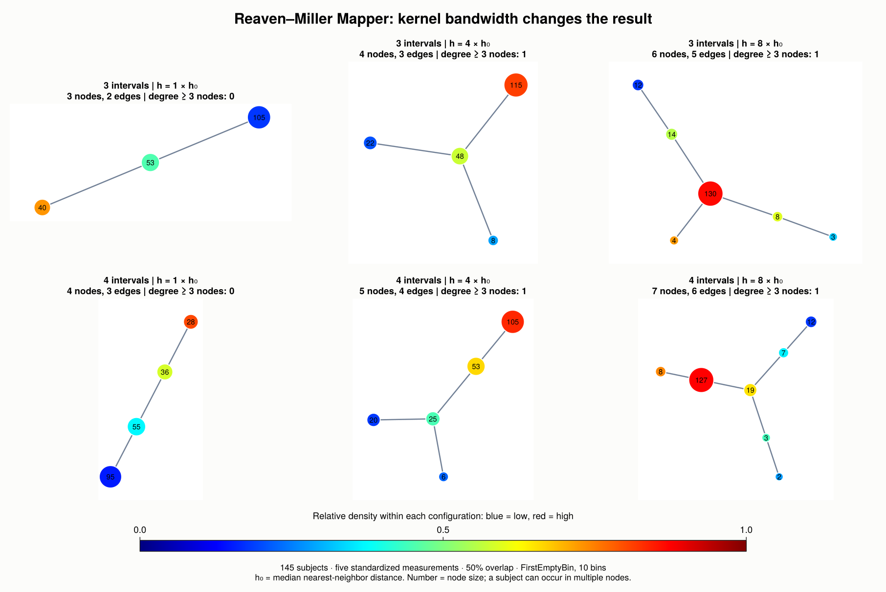
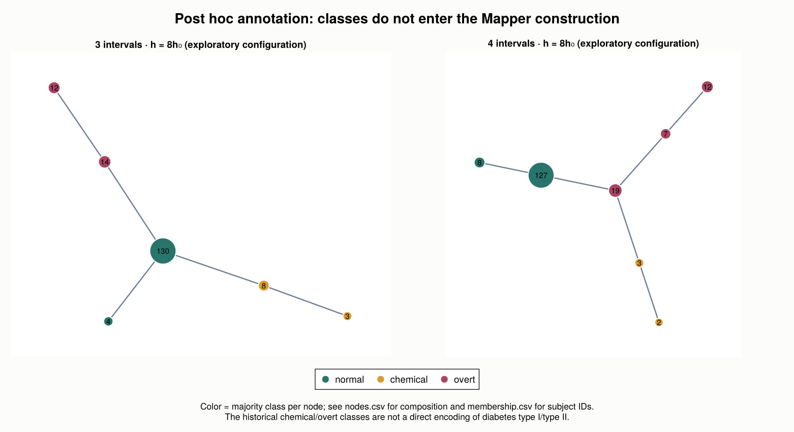
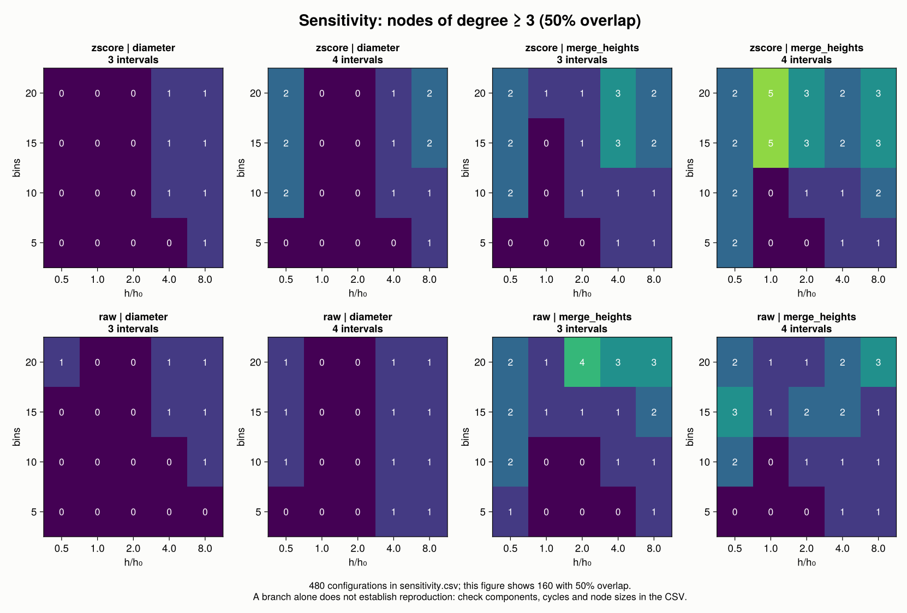

18 Reproducing Mapper: the Reaven–Miller experiment
The original Mapper paper, Singh et al. (2007), includes an analysis of 145 subjects from the Reaven–Miller diabetes study. Its Figure 5 shows a region of high density with two flares ending in lower-density nodes. We will try to recover this structure with the tools introduced in the Mapper chapter.
The outcome is a partial qualitative reproduction. Wider kernels recover a branched graph, but the automatic bandwidth produces a chain. Our graphs are coarser than the published figure, and we have not matched its individual nodes or their memberships.
18.1 What the paper specifies
The target experiment uses a Gaussian density filter, single-linkage clustering, and covers with 3 or 4 intervals and 50% overlap. The text mentions six measurements, including age. The two public distributions we found contain five measurements and the class annotation. The kernel bandwidth, histogram bin count, and preprocessing for this experiment are not specified in the paper.
| Ingredient | This reproduction |
|---|---|
| Subjects | All 145 rows in the public Reaven–Miller distribution |
| Measurements | rw, fpg, glucose, insulin, sspg; age is unavailable |
| Geometry | Euclidean distance; z-score per measurement in the main illustrations |
| Filter | Gaussian KDE on the complete dataset |
| Bandwidth | Multiples of the median nearest-neighbor distance |
| Cover | Equal-width intervals aligned with the filter’s minimum and maximum |
| Clustering | Single linkage with FirstEmptyBin, 10 bins in the main illustrations |
| Nerve | SimpleNerve: connect nodes that share at least one subject |
These choices complete an incompletely specified protocol. They are not claimed to be the unpublished settings of the original MATLAB implementation.
18.2 Obtain and verify the data
The underlying observations come from Reaven and Miller (1979) and the collection of Andrews and Herzberg (1985). We downloaded the RData objects distributed by rrcov and loon.data at fixed revisions. All 725 numerical measurements and all 145 class annotations agree in the same row order between the two copies.
| Column | Measurement |
|---|---|
rw |
Relative weight |
fpg |
Fasting plasma glucose |
glucose |
Area under the plasma glucose curve during the oral glucose tolerance test |
insulin |
Area under the plasma insulin curve during the same test |
sspg |
Steady-state plasma glucose response |
The group column contains 76 normal, 36 chemical, and 33 overt subjects. These historical labels are used only after constructing Mapper. They do not enter the distances, density, cover, clustering, or parameter grid, and are not a direct encoding of diabetes type I/II.
The book includes the CSV, source revisions and checksums, and both upstream RData files. The CSV can be analyzed entirely in Julia. Base R is needed only to rebuild the CSV or run the optional source-to-source check.
18.2.1 Prepare the environment
Run the following commands from the book’s root directory, with the book environment prepared as described in the introduction. The setup script uses the frozen book packages when available, or the sibling JuliaTDA checkouts, and creates a separate environment for this reproduction.
JULIA_PKG_PRECOMPILE_AUTO=0 julia --startup-file=no reproductions/experiments/mapper2007/scripts/setup.jl
julia --project=reproductions/experiments/mapper2007 --startup-file=no reproductions/experiments/mapper2007/scripts/download.jlThe second command verifies the bundled files against their SHA256 hashes and downloads a pinned source only when that file is missing. To reconstruct the CSV or cross-check the two RData objects, use:
julia --project=reproductions/experiments/mapper2007 --startup-file=no reproductions/experiments/mapper2007/scripts/download.jl --rebuild-csv
Rscript --vanilla reproductions/experiments/mapper2007/scripts/crosscheck.R reproductions/experiments/mapper2007The Julia blocks below form a sequence to run from the same book directory. They are displayed as code, with the recorded outputs presented separately.
import Pkg
repro_dir = joinpath(pwd(), "reproductions", "experiments", "mapper2007")
Pkg.activate(repro_dir)
using TDAplots
using TDAmapper.ImageCovers, TDAmapper.IntervalCovers
using TDAmapper.Refiners, TDAmapper.Nerves
using Statistics, DelimitedFiles, SHA, TOML
using CairoMakie
import Graphs18.2.2 Read the verified observations
csv_path = joinpath(repro_dir, "data", "diabetes.csv")
provenance = TOML.parsefile(joinpath(repro_dir, "data", "provenance.toml"))
@assert bytes2hex(sha256(read(csv_path))) == provenance["csv_sha256"]
rows, header = readdlm(csv_path, ',', Any; header = true)
@assert vec(String.(header)) ==
["patient_id", "rw", "fpg", "glucose", "insulin", "sspg", "group"]
@assert size(rows) == (145, 7)
@assert Int.(rows[:, 1]) == collect(1:145)
measurements = Float64.(rows[:, 2:6])
groups = String.(rows[:, 7])
@assert all(isfinite, measurements)
@assert [count(==(g), groups) for g in ("normal", "chemical", "overt")] ==
[76, 36, 33]patient_id is the original row position, not a personal identifier. Keeping it allows us to track a subject through the cover and the final graph.
18.3 Construct the geometry and density filter
The measurements have very different scales. We standardize each coordinate using its mean and sample standard deviation over all 145 subjects. The sensitivity analysis also includes the unstandardized data.
raw_space = EuclideanSpace(permutedims(measurements))
X = EuclideanSpace(standardize(raw_space))We evaluate the Gaussian filter
\[ f_h(x_i) = \frac{1}{n}\sum_{j=1}^{n} \exp\!\left(-\frac{d(x_i,x_j)^2}{2h^2}\right). \]
The term with \(j=i\) is included. A positive multiplicative normalization factor would not change the pullback of a cover built over the filter’s own range. The parameterization corresponds to the paper’s kernel with \(\varepsilon=2h^2\).
Since the original bandwidth is unknown, define \(h_0\) as the median distance to the nearest other subject. distance_to_measure(X, X) includes each point itself, so taking the maximum of the two nearest distances gives the desired nearest-neighbor distance.
nearest_distances = distance_to_measure(
X, X; k = 2, summary_function = maximum,
)
h0 = median(nearest_distances)Here \(h_0 \approx 0.4822665321\). We retain the automatic reference \(h=h_0\) and compare it with larger widths rather than displaying only the configuration that produces a branch.
18.4 Build a cover with the stated overlap
For \(k\) intervals and overlap fraction \(g\), let the filter range have length \(L\). The interval width and step are
\[ w = \frac{L}{k-(k-1)g}, \qquad s=(1-g)w. \]
The first interval begins at the minimum filter value; the last ends at the maximum. Adjacent intervals overlap by \(gw\). We use ManualCover to specify this convention explicitly.
function endpoint_cover(f; intervals, overlap = 0.5)
@assert intervals >= 2
@assert 0 <= overlap < 1
lo, hi = extrema(f)
@assert hi > lo
width = (hi - lo) / (intervals - (intervals - 1) * overlap)
step = width * (1 - overlap)
U = [
Interval(lo + (i - 1) * step,
i == intervals ? hi : lo + (i - 1) * step + width)
for i in 1:intervals
]
R1Cover(f, ManualCover(U))
endThis is not the same as Uniform(expansion=0.5): expansion has a different meaning, and Uniform centers intervals at division points that include the endpoints. The alignment of the cover can affect the result as well as its overlap.
18.5 Cluster the pullbacks and construct Mapper
FirstEmptyBin builds a single-linkage hierarchy within each pullback. It bins the merge heights and cuts at the midpoint of the first empty bin. In this implementation the histogram range extends to the pullback’s diameter; when there is no empty bin, the pullback remains one cluster.
function fit_reaven_mapper(X; factor, intervals)
f = kde(X; bandwidth = factor * h0)
cover = endpoint_cover(f; intervals, overlap = 0.5)
M = classical_mapper(X, cover, FirstEmptyBin(num_bins = 10), SimpleNerve())
(; M, f)
end
function summarize_graph(M)
components = Graphs.connected_components(M.g)
(
nodes = Graphs.nv(M.g),
edges = Graphs.ne(M.g),
components = length(components),
graph_cycle_rank = Graphs.ne(M.g) - Graphs.nv(M.g) + length(components),
branch_nodes = count(>=(3), Graphs.degree(M.g)),
covered_subjects = length(unique(reduce(vcat, M.C))),
)
end
illustrated_models = [
(; factor, intervals, fit_reaven_mapper(X; factor, intervals)...)
for factor in (1.0, 4.0, 8.0) for intervals in (3, 4)
]
for model in illustrated_models
println((; model.factor, model.intervals, summarize_graph(model.M)...))
end18.6 Compare the recorded results
| Intervals | \(h/h_0\) | Nodes | Edges | Components | Nodes of degree \(\geq 3\) | Structure |
|---|---|---|---|---|---|---|
| 3 | 1 | 3 | 2 | 1 | 0 | Chain |
| 4 | 1 | 4 | 3 | 1 | 0 | Chain |
| 3 | 4 | 4 | 3 | 1 | 1 | Branched tree |
| 4 | 4 | 5 | 4 | 1 | 1 | Branched tree |
| 3 | 8 | 6 | 5 | 1 | 1 | Branched tree |
| 4 | 8 | 7 | 6 | 1 | 1 | Branched tree |
All six graphs are connected, have no graph cycles, and cover every subject.

We can inspect an individual model through the public plotting API:
model = only(m for m in illustrated_models if m.factor == 8.0 && m.intervals == 4)
mapper_plot(
model.M;
node_values = node_colors(model.M, model.f),
node_positions = layout_spring(model.M; seed = 2007, iterations = 300),
node_size = 13 .+ 4sqrt.(length.(model.M.C)),
colormap = :jet,
)18.6.1 Annotate classes after constructing the graph
Only now do we examine the historical classes. A node can contain several classes, so its majority label is a summary, not a claim that it is homogeneous.
node_composition = [
(
node_id = i,
size = length(ids),
normal = count(==("normal"), groups[ids]),
chemical = count(==("chemical"), groups[ids]),
overt = count(==("overt"), groups[ids]),
)
for (i, ids) in enumerate(model.M.C)
]For \(h=8h_0\), the two lower-density endpoints contain:
| Cover | Chemical endpoint | Overt endpoint |
|---|---|---|
| 3 intervals | 3/3 chemical | 12/12 overt |
| 4 intervals | 2/2 chemical | 12/12 overt |

This is a qualitative agreement with the flare pattern, not a complete recovery of the classes. For example, the 130-subject node in the three-interval graph contains 76 normal, 33 chemical, and 21 overt subjects. The overlapping node sizes must not be summed as though they were disjoint groups.
18.7 Examine sensitivity
The six illustrations are part of a grid of 480 configurations:
| Choice | Values |
|---|---|
| Scaling | z-score; raw measurements |
| Bandwidth factor | 0.5, 1, 2, 4, 8 |
| Histogram bins | 5, 10, 15, 20 |
| Interval count | 3, 4 |
| Histogram range | Pullback diameter; maximum merge height |
| Overlap fraction | 0.35, 0.50, 0.65 |
The merge-height variant is a sensitivity comparison, not a recovered MATLAB setting. All 480 configurations cover the 145 subjects. Among the 160 with 50% overlap, 49 are connected trees with at least one node of degree three or more:
| Scaling | Histogram range | Branched connected trees / configurations |
|---|---|---|
| z-score | Diameter | 15/40 |
| z-score | Merge heights | 7/40 |
| Raw | Diameter | 17/40 |
| Raw | Merge heights | 10/40 |

These counts describe the chosen grid; they are not probabilities or statistical tests. A branch alone does not establish the two particular flares of interest. Also, graph_cycle_rank counts cycles of the graph: with triple intersections it need not equal \(H_1\) of the full simplicial nerve.
The automatic reference bandwidth fails to recover the bifurcation, and the wider-kernel configurations were inspected on these same observations. There is no held-out evaluation or proof of statistical robustness.
18.8 Run the complete experiment and inspect its checks
To regenerate the parameter grid and all figures, run:
julia --project=reproductions/experiments/mapper2007 --startup-file=no reproductions/experiments/mapper2007/scripts/run.jlPass --no-plots to run the analysis and integrity checks without rendering figures. The checks compare the Gaussian KDE with its explicit sum, every nerve edge with the intersection of the corresponding subject sets, and single linkage with connected components of a graph thresholded at the cutoff. They also verify complete subject coverage. The checks passed in the recorded run; two complete executions of the original experiment produced identical summary and sensitivity CSVs.
| Artifact | Contents |
|---|---|
| Selected models | Metrics for the six illustrations |
| Sensitivity grid | All 480 parameter combinations and graph summaries |
| Configuration | All grid and illustration choices |
| Audit | Recorded integrity checks |
| Run metadata | Julia version, checksums, commits, and local source fingerprints |
| Resolved environment | Package versions and relative paths to the frozen book sources |
| Four-interval node composition | Counts of each class in each node |
| Four-interval memberships | Original subject row IDs for every node |
| Four-interval edges | Edges and counts of shared subjects |
| Analysis script | The complete executable experiment |
Equivalent node, edge, membership, interval, and filter files are available for each of the six illustrated models. The run metadata fingerprints the package source files actually used, including the frozen book snapshots. These fingerprints also capture uncommitted changes when running with sibling checkouts; commit IDs alone would not describe those changes.
18.9 What has been reproduced?
We recovered a high-density region connected to two lower-density endpoints in several explicitly recorded configurations, including endpoints enriched for the two historical diabetic labels. We did not recover the published nodes, their sizes, or their exact memberships. The graphs are coarser, the automatic bandwidth gives a different structure, and the public dataset lacks the age variable mentioned in the paper.
A more faithful match requires the missing measurement and the original bandwidth, preprocessing, and histogram convention. The paper’s torus and 3D shape-recognition experiments are outside this first reproduction.